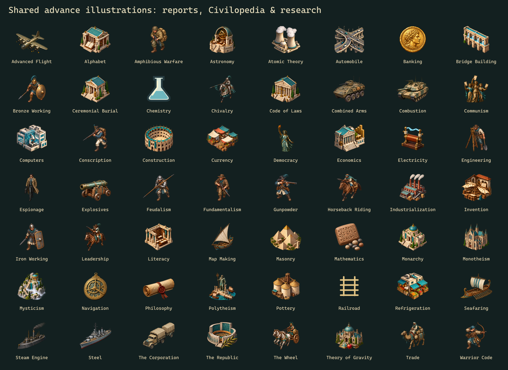

Report layout refinements
All four variants · Validation · Source and integration limits
Banding follows the source text rows and joins each staggered city/unit illustration. Header depth follows each report. The enhanced military views add readable headings; casualties count losses by civilization. Top Cities enlarges wonders within their existing rows. Civilopedia buttons now retain the source page’s actions and disabled state.
The original engine reuses 20 era/category icons. Its standalone report fixture now supplies the missing era field. Enhanced reports, Civilopedia and research selection share 56 individually selected illustrations. Original and HD-only still follow the source icon selection.

City, Attitude and Trade patterns are also available as background-only PNGs. Scrolling an odd number of rows flips the source icon columns, so those need matching even/odd plates. Selecting the phase, handling arbitrary sizes/fonts, and separating shared report resources requires a small renderer/loader change. No game code was changed here.